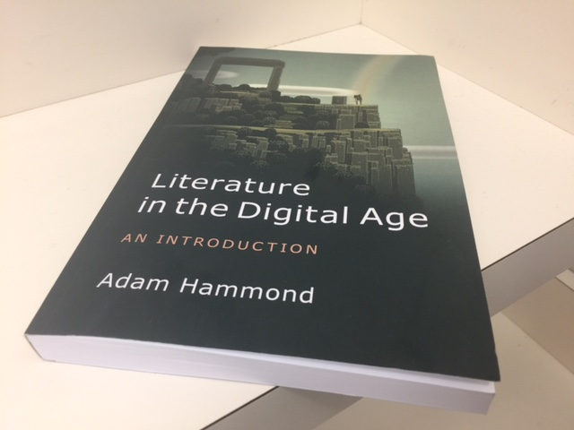

Sultan's Web Page
Personal Information:
- Sultan Alquthami
- Second-Year Ph.D Lit. Student
Education:
- MA in English Literature, Indiana University of Pennsylvania (2013-2015)
- Ph.D. in Literature and Criticism, Indiana University of Pennsylvania (in progress)
Academic Interests:
- Neocolonial literature
- World-system theories
- Eco-criticism
- Biopolitics
Important Links